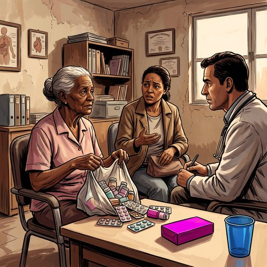

Consulta rápida à beira do leito
Condutas, doses e interações.
Referências da aula · 8
- 2023 American Geriatrics Society Beers Criteria® Update Expert Panel. American Geriatrics Society 2023 updated AGS Beers Criteria® for potentially inappropriate medication use in older adults. J Am Geriatr Soc. 2023;71(7):2052-81. PMID 37139824. doi:10.1111/jgs.18372.PubMedDOI
- O’Mahony D, Cherubini A, Guiteras AR, et al. STOPP/START criteria for potentially inappropriate prescribing in older people: version 3. Eur Geriatr Med. 2023;14(4):625-32. PMID 37256475. doi:10.1007/s41999-023-00777-y.PubMedDOI
- American Psychiatric Association. Diagnostic and Statistical Manual of Mental Disorders, Fifth Edition, Text Revision (DSM-5-TR). Washington, DC: APA; 2022.
- Livingston G, Huntley J, Liu KY, et al. Dementia prevention, intervention, and care: 2024 report of the Lancet standing Commission. Lancet. 2024;404(10452):572-628. PMID 39096926.PubMed
- Petersen RC, Lopez O, Armstrong MJ, et al. Practice guideline update summary: mild cognitive impairment. Neurology. 2018;90(3):126-35. PMID 29282327. doi:10.1212/WNL.0000000000004826.PubMedDOI
- Inouye SK, Westendorp RGJ, Saczynski JS. Delirium in elderly people. Lancet. 2014;383(9920):911-22. PMID 23992774. doi:10.1016/S0140-6736(13)60688-1.PubMedDOI
- Freitas EV, Py L, organizadores. Tratado de Geriatria e Gerontologia. 5ª ed. Rio de Janeiro: Guanabara Koogan; 2022.
- Linhares Junior JD. Casos clínicos ilustrativos construídos para as aulas, a partir da prática clínica geriátrica. In: Pós-graduação em Geriatria 2.0. Afya; 2026.
Documentos oficiais
Leis e publicações do Ministério da Saúde sobre o cuidado da pessoa idosa, de acesso livre.
Abrir os documentos